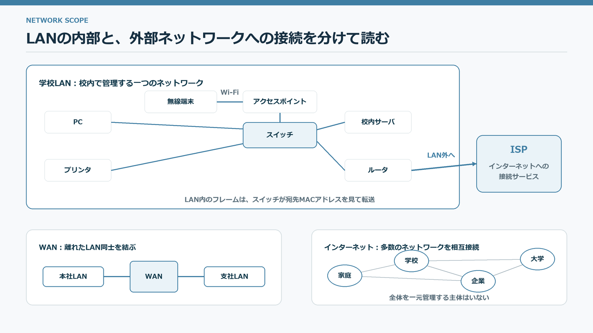
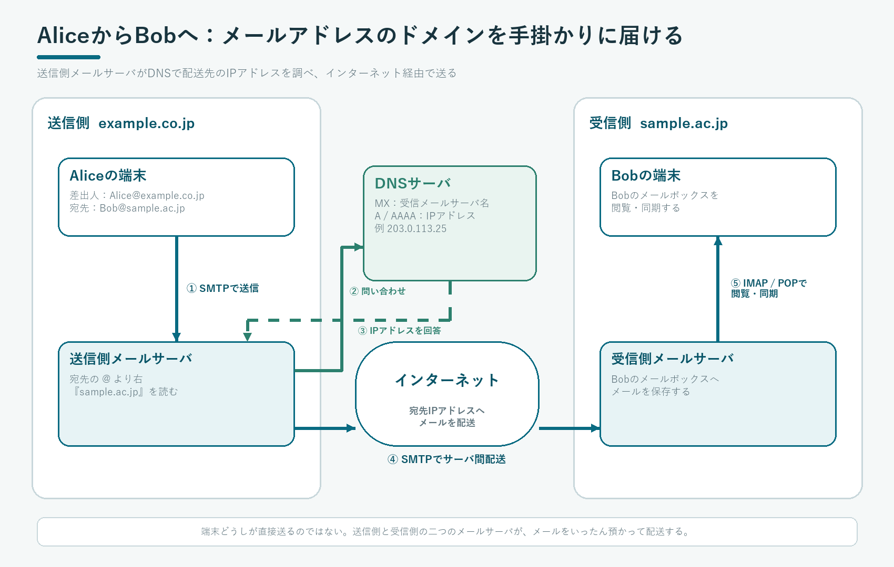

LAN · WAN · ISP
小さなネットワークを接続し、世界へ広げる
LAN、WAN、ISP、インターネットは、範囲と管理主体が異なります。

家庭・学校・建物内など、限られた範囲で一つの組織や利用者が管理するネットワークをといいます。学校LANなら、PC、プリンタ、校内サーバ、無線アクセスポイントなどをスイッチへ接続し、外部へ出る通信は境界のルータへ渡します。無線LANもLANの一部であり、アクセスポイントが無線端末と有線側のLANを橋渡しします。
離れた場所にあるLAN同士を通信回線で結ぶ広域ネットワークがです。例えば本社LANと支社LANを閉じた回線で結ぶ構成が該当します。家庭や学校をインターネットへ接続するサービスを提供する事業者がです。LAN、WAN、インターネットは単なる大きさの違いではなく、だれが管理し、どの範囲を結ぶかが異なります。
| 機器 | 役割 |
|---|---|
| スイッチ | LAN内で宛先MACアドレスに応じてフレームを転送する |
| ルータ | 異なるネットワーク間で宛先IPアドレスに応じてパケットを転送する |
| アクセスポイント | 無線LAN端末を有線側のネットワークへ接続する |
| モデム・ONU | 回線に合わせて信号を変換する |
多数の組織が管理するネットワークを、共通のTCP/IPで相互接続した「ネットワークのネットワーク」がです。全体を一つの組織が所有・運用しているのではなく、各ネットワークが相互接続し、宛先への経路情報を交換することで成り立っています。
端末→アクセスポイントまたはスイッチ→学校のルータ→契約先ISP→複数の中継ネットワーク→Webサーバ、という範囲を順に通ります。
有線LANと無線LANは、使いやすさと安定性が異なる
有線LANは通信が安定しやすく、無線LANは移動しやすいという違いがあります。無線では電波が共有されるため、距離、壁、他の機器との干渉、接続台数によって速度や安定性が変わります。
さらに詳しく：ハブとスイッチは何が違うか
リピータハブは受け取った信号を基本的に全ポートへ流すため、同じ通信媒体を共有します。スイッチは送信元MACアドレスから接続先を学習し、宛先に必要なポートへ転送します。現在の有線LANではスイッチが一般的です。
ルータはLANの外へ出る境界に置かれます。家庭用機器では、ルータ、スイッチ、無線アクセスポイント、DHCP、NAT、ファイアウォールなど複数の機能が一台にまとめられています。
CENTRALIZED · DISTRIBUTED · P2P
処理をどこで行うかで、システムの形が変わる
集中処理・分散処理・クライアントサーバ・P2Pを、役割と弱点で比較します。

処理システムは、計算やデータをどこへ置くかによってとに分類できます。集中処理では、中央コンピュータが主要な処理とデータ管理を担い、端末は主に入力・出力を行います。管理方針を統一しやすい一方、中央へ負荷が集中し、中央の障害が全体へ影響しやすくなります。
分散処理では、複数のコンピュータが役割を分担して一つの処理を実現します。機器を増やして負荷を分けたり、障害の影響を局所化したりできますが、データの同期、処理順序、複数箇所の障害対応などが必要です。とは、集中処理と並ぶ独立分類ではなく、分散処理の代表的な構成です。
クライアントサーバ
クライアントが「このページを送ってほしい」「この商品を検索したい」と要求し、サーバがWebページ・検索結果・ファイルなどを提供します。同じ端末でも、利用する機能によってクライアントにもサーバにもなり得ます。
P2P
各ピアが対等に接続し、データを受け取る側にも提供する側にもなります。特定の1台へ機能を集めない構成を作れますが、参加端末の状態やデータの所在を管理する工夫が必要です。
どちらも中央側の大きな機器へ複数端末がつながる図になりやすいですが、集中処理では端末は基本的に入力・表示を担当し、計算は中央へ集めます。クライアントサーバでは、クライアントもプログラムを動かして処理し、必要なサービスやデータをサーバへ要求します。
サーバは、提供するサービスで役割が変わる
ファイルサーバ
共有ファイルを保存し、利用者ごとの権限を管理する。
Webサーバ
ブラウザからの要求に応じてHTMLや画像、処理結果を返す。
メールサーバ
メールを受け取り、宛先のサーバや利用者へ配送する。
データベースサーバ
データの検索・更新・整合性・同時利用を管理する。
さらに詳しく：仮想化とクラウドサービス
では、一台の物理コンピュータ上で複数の仮想的なサーバを動かし、CPU・主記憶・ストレージを分配します。必要な時に増減しやすく、故障時の移行や管理を自動化しやすい利点があります。
| 分類 | 利用者が主に使うもの | 例 |
|---|---|---|
| SaaS | 完成したアプリケーション | Webメール、オンライン文書 |
| PaaS | アプリを動かす実行環境 | Webアプリ開発基盤 |
| IaaS | 仮想サーバ、ネットワーク、ストレージ | 仮想マシンの貸出し |
クラウドは「インターネット上にある」だけではなく、資源を必要に応じて利用し、利用量に応じて拡張・管理できるサービス形態です。障害、通信断、事業者への依存、データの所在も検討します。
PROTOCOL · LAYERS
通信規約を階層に分け、役割を明確にする
送受信の形式・順序・エラー処理を定めた約束がプロトコルです。
異なる機器やソフトウェアが通信するには、データ形式、送信の順序、確認応答、エラー時の処理などを共通化する必要があります。この規約をといいます。
「Webページを送って」「どうぞ」という通信を、役割の異なる四つの層で分担する。
は到着確認・順序制御・再送などで信頼性を高め、Webやメール、ファイル転送などで広く使われます。は確認処理を簡略化し、DNSの問い合わせや、遅延を小さくしたい音声・映像・ゲームなどで使われます。ただし、用途と方式が一対一で決まるわけではありません。ここでは「TCPは信頼性を高める機能を備え、UDPは簡潔にデータを運ぶ」という役割の違いを押さえます。
TCPとUDPは、信頼性と即時性のどちらを重視するかが違う
| 項目 | TCP | UDP |
|---|---|---|
| 接続 | 通信前に接続を確立する | 接続確立を行わず送る |
| 到達確認 | 順序、確認応答、再送、流量を制御する | 基本的にアプリケーション側へ任せる |
| 特徴 | 欠落や順序の乱れを補いやすい | 制御が少なく、遅延を小さくしやすい |
| 用途例 | Web、メール、ファイル転送 | 音声通話、映像配信、DNSなど |
階層化すると、上位のアプリケーションは下位の通信媒体の違いを細かく意識せずに済みます。また、一つの層の方式を変更しても、境界の約束が同じなら他の層への影響を小さくできます。
さらに詳しく：OSI参照モデルとTCP/IPモデル
OSI参照モデルは通信機能を7層に整理した考え方です。実際のインターネットでは、アプリケーション、トランスポート、インターネット、ネットワークインタフェースの4層で説明するTCP/IPモデルがよく使われます。
層の数を暗記するだけでなく、障害を切り分ける時に「無線接続か」「IP設定か」「名前解決か」「Webアプリか」のように確認範囲を分けられることが重要です。
さらに詳しく：プロトコルを分けると、一部を交換しても全体を作り直さずに済む
通信規約を階層化すると、アプリケーションは有線LANか無線LANかを意識せずにデータを送れます。下位の通信方式が変わっても、層の境界で同じ機能が提供されれば上位の仕組みを再利用できます。
一方、障害調査では境界を順番に確認します。物理的に接続できているか、IP設定があるか、名前解決できるか、相手のアプリケーションが応答するかを分けると、原因を絞り込めます。
さらに詳しく：通信速度の表示値と実効速度を分けて考える
回線の表示速度が100 Mbit/sでも、利用者のデータだけが毎秒100 Mbit届くとは限りません。ヘッダ、再送、混雑、無線の電波状態、相手側の処理速度などを含めた実際の転送量をといいます。
理想的な転送時間は「データ量÷速度」で見積もれます。800 Mbitのデータを100 Mbit/sで送るなら8秒ですが、実際は各種の付加情報と待ち時間により長くなります。byteとbitを混同せず、1 byte=8 bitへ換算します。
ENCAPSULATION
各層が制御情報を付け、受信側で逆順に外す
通信データは、送信側でヘッダを重ね、受信側で同じ階層ごとに解釈します。
HTTPなどアプリケーションの内容。
TCPヘッダとデータ。
IPヘッダ、TCPヘッダ、データ。
リンク用ヘッダ・末尾情報を付加。
ヘッダには、IPアドレス、MACアドレス、順序制御など、その層で必要な制御情報が入ります。どの情報を付けるかは、それぞれの層の役割によって異なります。
ある層の技術を変更しても、他の層との受け渡し方が保たれていれば、全体を作り直さずに改良できます。
IP · MAC · NAT
IPアドレスで最終相手を示し、区間ごとに送り直す
IPパケットと、LANで運ぶためのフレームを分けて考えます。
端末がWebサーバへ送るIPパケットには、最終的な通信相手のが入ります。ルータはその宛先を見て、経路表から次に送り出す方向を選びます。IPアドレスは「インターネット全体の中で、最終的にどこへ届けたいか」を判断するための情報です。
ただし、IPパケットが一本の入れ物のまま全区間を通るわけではありません。端末はまず、相手が同じLANにいるか、別のネットワークにいるかを判断します。別のネットワークなら、IPパケットをLAN用のに入れ、であるルータへ渡します。
ルータへ届くと、その区間で使ったフレームの役目は終わります。ルータは中のIPパケットを確認し、次の区間に合う新しいフレームへ入れて送り出します。Ethernetや無線LANの区間では、このフレームの届け先を示すためにMACアドレスを使います。したがって、MACアドレスはインターネット全体を通じた住所ではなく、です。
| 情報 | 入っている場所 | 高校情報Ⅰで押さえる役割 |
|---|---|---|
| IPアドレス | IPパケット | 最終的な通信相手を示し、ルータが経路を選ぶ基準になる |
| MACアドレス | Ethernet・無線LANなどのフレーム | 同じLAN区間で、端末やルータのインターフェースへ届ける |
端末が最初のフレームで指定する相手は、遠くのWebサーバそのものではなく、通常は同じLANにいるルータです。ルータを越えるたびに、その区間の通信方式に合わせてフレームを作り直します。宛先IPアドレスは原則として最終サーバを示したままですが、NATを通る場合などは書き換えられます。
IPv4は、IPv6はです。IPv4アドレス不足を緩和するため、LAN内では外部で直接使わないプライベートIPアドレスを利用し、境界のルータがでグローバルIPアドレスへ対応づけます。NATはアドレス変換であり、それだけで完全なセキュリティ対策になるわけではありません。
はIPアドレス、サブネットマスク、デフォルトゲートウェイ、DNSサーバなどの設定を端末へ自動配布します。端末が接続直後から通信できるのは、これらを手入力せず受け取れるためです。
さらに詳しく：サブネットマスクは、所属ネットワークを判定する
IPv4アドレスのうち、どこまでがネットワーク部かを示すのがサブネットマスクです。送信先が同じネットワークならLAN内で直接届け、異なるならデフォルトゲートウェイであるルータへ渡します。
例えば192.168.10.0/24では先頭24 bitがネットワーク部です。高校情報Ⅰでは、細かな割当計算より「同じネットワークかを判断して次の届け先を変える」という役割を押さえます。
さらに詳しく：IPパケットとリンクのフレームを厳密に分ける
Ethernetや無線LANでは、送信端末は「次に同じLAN内で渡す相手」のIPアドレスに対応するMACアドレスを調べます。IPv4ではARP、IPv6では近隣探索がこの対応づけを支えます。遠くのWebサーバへ送る場合、最初に調べるのは通常、WebサーバではなくデフォルトゲートウェイのMACアドレスです。
ルータは受信したフレームからIPパケットを取り出し、経路を選んで、次のリンク用の新しいフレームへ入れます。したがって送信元・宛先MACアドレスは区間ごとに変わります。一方、送信元・宛先IPアドレスは原則として端末間で保たれますが、NAT、プロキシ、トンネルなどが入る場合は単純に同じとは限りません。
また、インターネットのすべてのリンクがEthernetや無線LANとは限らず、MACアドレスという説明がそのまま当てはまらない通信方式もあります。まずは「IPは終点と経路選択、リンク層の情報は次の区間」という役割分担を理解します。
さらに詳しく：IPv6とNATの役割を混同しない
IPv4は32 bit、IPv6は128 bitのアドレスを使います。IPv4アドレスの不足へ対応するため、家庭や学校では複数の端末がプライベートアドレスを使い、外部通信時にNATでグローバルアドレスへ変換する構成が広がりました。
NATはアドレスを変換する仕組みであり、それだけで安全を保証する機能ではありません。IPv6でもIPv4でも、不要な受信を制限するファイアウォール、端末の更新、認証が必要です。
さらに詳しく：DHCPで自動設定される項目
端末がネットワークへ接続すると、DHCPから利用可能なIPアドレスを一定期間借りることがあります。同時に、サブネットマスク、デフォルトゲートウェイ、DNSサーバなど、通信に必要な設定を受け取ります。
自動設定に失敗すると、LAN内の一部だけ通信できる、IPアドレスでは接続できるが名前では接続できない、といった症状になります。設定項目の役割を分けて確認します。
ROUTER · ROUTING · PACKET SWITCHING
ルータが次の中継先を選び、パケットをバケツリレーする
インターネットには複数の経路があり、各ルータは宛先までの全行程ではなく次の一歩を選びます。
インターネットの中継網では、ルータ同士が一本の直線ではなくに接続されています。あるリンクやルータが使えない場合でも別経路を選べるようにし、通信量や管理方針に応じて経路を変えられるためです。すべてのルータがすべての端末を直接知っているのではなく、宛先IPアドレスの範囲と「次に渡すルータ」を対応づけたを使います。
送るデータを扱いやすい大きさのパケットに分ける。
ルータが宛先IPと経路表を照合する。
選んだ次のルータへパケットを渡す。
受信側が届いたデータを正しい順序へ戻す。
通信前に送信者と受信者の間の一本の回線を占有するのではなく、複数の通信が回線を共有し、パケット単位で転送する方式をといいます。各パケットは同じ経路を通るとは限らず、混雑や障害で別経路になる場合があります。TCPを使う通信では、欠落や順序の入替えを検出し、必要に応じて再送・並べ替えを行います。
さらに詳しく：経路表と動的経路制御
ルータは宛先ネットワークと次に渡す相手を記録したを参照します。小さなネットワークでは手作業で設定できますが、インターネットではルータ同士が到達可能な経路情報を交換し、変化へ対応します。
経路は物理的な最短距離だけでなく、回線の速度、混雑、管理方針、障害などによって選ばれます。同じ通信のパケットが常に完全に同じ道を通るとは限りません。
さらに詳しく：TTLと経路調査は、同名でもDNSのTTLとは別物
IPパケットのは、ルータを一つ通るたびに減り、0になると破棄されます。誤った経路設定でパケットが回り続けることを防ぐ仕組みです。DNS回答をキャッシュできる時間もTTLと呼びますが、目的も働く場所も異なります。
tracerouteやtracertは、TTLを段階的に変えたパケットを送り、途中のルータから返る応答を使って経路を推測します。応答しない装置や往路・復路の違いもあるため、表示された経路を通信全体の完全な地図とは考えません。
DNS · DOMAIN · URL
人が読む名前を、通信に使うIPアドレスへ変換する
DNSは階層的・分散的に管理され、必要な情報を順に問い合わせます。
はドメイン名とIPアドレスなどを対応づける仕組みです。端末は通常、設定されたキャッシュDNSサーバへ問い合わせます。情報がなければ、ルートDNS、TLD DNS、権威DNSをたどって結果を得ます。
| 部分 | 意味 |
|---|---|
| https | スキーム。通信方法を示す |
| www.example.jp | ホスト名・ドメイン名 |
| /course/index.html | サーバ内の資源へのパス |
DNSの応答には有効期間を示すがあり、キャッシュはその期間だけ再利用されます。
キャッシュによって毎回最上位から問い合わせずに済む一方、DNSの設定変更がすべての利用者へ直ちに反映されない場合があります。古い回答はTTLが切れるまで利用されることがあるためです。
さらに詳しく：DNSの階層と権威サーバ
ルート、トップレベルドメイン、各組織の権威DNSサーバへと管理を分担します。利用者の端末は通常、再帰問い合わせを行うDNSリゾルバへ尋ね、リゾルバが必要な問い合わせを代行して結果を返します。
DNSは名前とIPアドレスの対応を調べる仕組みであり、通信内容そのものを運ぶ仕組みではありません。名前解決の後に、得られたIPアドレスを使ってWebサーバなどへ接続します。
さらに詳しく：DNSには名前とIP以外の情報も登録される
AレコードはIPv4アドレス、AAAAレコードはIPv6アドレス、MXレコードはメールの配送先、CNAMEは別名を示します。DNSサーバは役割に応じたを返します。
回答には有効期間TTLがあり、キャッシュはその期間再利用されます。設定変更がすぐ全利用者へ反映されないことがあるのは、各地のキャッシュが期限まで古い回答を保持するためです。
公式・公的資料 JPNIC『DNSとは』 階層的・分散的に名前を管理するDNSの基本を確認できます。 ↗HTTP · WEB · EMAIL
Webの要求と、メールの配送・受信を分けて追う
どちらもインターネットを使いますが、利用するサーバとデータの流れは異なります。
Webページを閲覧する流れ
- ブラウザがURLを解釈し、DNSでWebサーバのIPアドレスを調べます。
- WebサーバへHTTPまたはHTTPSの要求を送ります。
- サーバはHTML、画像、CSS、処理結果などを応答として返します。
- ブラウザは必要な資源を追加取得し、画面を組み立てます。
はWebの要求と応答の規則です。HTTPSでは、TLSによって相手を証明書で確認し、通信内容を暗号化し、途中の改ざんを検出しやすくします。
電子メールを送受信する流れ
AliceがAlice@example.co.jpからBob@sample.ac.jpへ送る例で追います。@より右のsample.ac.jpが、受信側を表すドメイン名です。

Bob@sample.ac.jpのドメイン部分を手掛かりにDNSへ問い合わせ、受信側メールサーバのIPアドレスを得て、インターネット経由で配送する。- Aliceの端末は、作成したメールを送信側メールサーバへ渡します。
- 送信側メールサーバは、宛先のドメイン名
sample.ac.jpを読み取ります。 - DNSへ問い合わせ、
sample.ac.jp宛てのメールを受け取るメールサーバ名と、そのIPアドレスを調べます。 - 得たIPアドレスを宛先として、インターネット経由で受信側メールサーバへ配送します。
- 受信側メールサーバはBobのメールボックスへ保存し、Bobの端末が閲覧・同期します。
| 段階 | 役割 | 代表的な規則 |
|---|---|---|
| 送信 | 利用者のメールソフトから送信側サーバへ渡す | SMTP |
| 配送 | 宛先ドメインをDNSで調べ、受信側メールサーバへ転送する | SMTP |
| 閲覧 | 受信側サーバに保存されたメールを読む・同期する | IMAP、POP |
IMAPはサーバ上のメールやフォルダを複数端末で同期するのに向きます。POPは端末へ受信する考え方が中心です。WebメールではブラウザとWebサーバの間でHTTP(S)を使い、サービス内部ではメール配送の規則も使われます。
さらに詳しく：DNSで配送先を調べる二段階
正確には、送信側メールサーバはDNSのを調べて「そのドメイン宛てのメールを受け取るサーバ名」を得ます。次に、そのサーバ名のAレコードまたはAAAAレコードを調べ、IPv4またはIPv6アドレスを得ます。
高校情報Ⅰでは「メールアドレスのドメイン部分から、DNSを使って受信側メールサーバのIPアドレスを調べる」と流れを押さえれば十分です。
さらに詳しく：キャッシュ、Cookie、セッション
は取得済みのデータを一時保存し、再表示を速くし通信量を減らします。古い内容が残ることもあるため、更新確認や有効期限が必要です。
はWebサイトがブラウザへ保存を依頼する小さなデータです。ログイン状態を識別するセッションID、設定、買物かごなどに使われます。パスワードそのものを保存するとは限りませんが、セッションIDを盗まれると本人になりすまされる危険があるため、HTTPS、期限、アクセス制限などで守ります。
さらに詳しく：プロキシとキャッシュの利点・注意点
は利用者の代わりにWebサーバへ接続します。組織内でアクセス制御や記録を行う、同じデータをキャッシュして通信量を減らすなどの用途があります。
仲介する位置にあるため、設定や運用が不適切なら閲覧先や通信内容に関する情報が集中します。HTTPSでは、どこまでが暗号化され、どの装置が証明書を検証しているかも確認します。
さらに詳しく：広告・推薦は閲覧履歴から作られることがある
Webサイトやアプリは、Cookie、広告識別子、閲覧ページ、検索語、購入履歴などを使って利用者の関心を推定し、広告や推薦の順序を変えることがあります。便利になる一方、推定が外れる、偏った情報だけが見える、別の利用目的へ広がる可能性があります。
サイトをまたぐ追跡の有無、プライバシー設定、保存期間、第三者提供を確認します。推薦結果は人気や正しさを保証せず、表示されない選択肢も意識します。
INFORMATION SYSTEM
入力・処理・保存・出力を、人と手続きまで含めて設計する
情報システムはコンピュータだけでなく、人・組織・規則・データを含みます。
- 利用者・目的何を実現するか決める
- 入力必要なデータを集める
- 処理・保存規則に沿って処理し、データベースへ保存
- 出力結果を画面・帳票・通知で示す
- 評価・改善出力を確かめ、入力や処理へ戻す
情報システムは、目的を達成するために情報を収集・処理・蓄積・提供する仕組みです。ハードウェア、ソフトウェア、ネットワーク、データベースだけでなく、とも含みます。
社会基盤
交通、電力、金融、医療、行政など。停止時の影響が大きく、高い可用性が必要です。
業務システム
販売、在庫、予約、成績管理など。正確なデータと権限管理が重要です。
障害に備えて予備の機器・回線・データなどを用意することをといいます。一部に障害が起きても必要な機能を継続できるよう設計する考え方がです。障害時に機能や性能を段階的に縮小しながら全停止を避ける設計は、特にといいます。
社会の情報システムは、業務とデータの流れを支える
| システム | 入力 | 処理・出力 |
|---|---|---|
| POS | 商品コード、時刻、店舗、数量 | 会計、在庫更新、売上分析、発注 |
| 予約 | 利用者、日時、座席・施設 | 空き状況の更新、重複防止、確認通知 |
| 金融 | 口座、金額、認証情報 | 残高・取引履歴の整合性を保って更新 |
| 交通系IC | 識別情報、乗降地点、時刻 | 運賃計算、精算、利用履歴 |
| 電子商取引 | 商品、注文、決済、配送先 | 在庫・決済・配送を複数システムで連携 |
止められないシステムでは、機器や回線を二重化し、障害を検知したら待機系へ切り替えます。単にサーバを二台置くだけでなく、データの同期、切替手順、復旧後の戻し方、訓練まで設計します。
さらに詳しく：IoTとサイバーフィジカルシステム
では、センサを備えた機器をネットワークへ接続し、状態を収集して遠隔制御や予測へ使います。温度センサから空調を制御する、機械の振動から故障を予測するなどが例です。
実世界のデータをサイバー空間で分析し、結果を実世界へ戻す仕組みでは、誤ったデータや通信断が物理的な事故につながる可能性があります。安全側へ停止する設計、手動操作、更新と認証が重要です。
さらに詳しく：POS・交通IC・ECは入力の時点から情報システム
POSでは商品コードと販売時刻、店舗などを記録し、在庫補充や売上分析へ使います。交通系ICでは乗降や決済を処理し、運行計画や混雑分析へ利用できる場合があります。ECでは注文、在庫、決済、配送、問い合わせが連携します。
画面やサーバだけでなく、バーコードを正しく読む、返品を登録する、障害時に手作業へ切り替える、誤入力を訂正するなど、人の手順まで含めてシステムです。入力データが誤れば、高度な分析をしても結論は改善しません。
RELATIONAL DATABASE
表を関連づけ、重複と矛盾を減らす
リレーショナルデータベースでは、行・列・キーを使ってデータを構造化します。
正規化して三つの表へ分ける
氏名、部活名、顧問をそれぞれ一度だけ保存し、所属だけをIDの組で記録する。
結合して、読みたい一つの表に戻す
画面や帳票では、分割した表を結合して人が読みやすい結果を作る。
| 操作 | 意味 | 上の部活動データでの例 |
|---|---|---|
| 条件に合う行を取り出す | 科学部に所属する行だけを取り出す | |
| 必要な列を取り出す | 氏名と部活名の列だけを表示する | |
| 共通項目を使って表をつなぐ | 学生ID・部活IDを対応づけ、氏名・部活名・顧問を一つの表にする |
行を一意に識別する列を、別の表の主キーを参照する列をといいます。正規化は、データの重複を減らし、追加・更新・削除時の矛盾を防ぐために表を分割する考え方です。
型・範囲・一意性・参照関係などの制約を設け、矛盾したデータが入らないようにします。バックアップとは役割が異なります。
DBMSは、データを安全に同時利用するための機能をまとめる
| 性質 | 意味 |
|---|---|
| 独立性 | 保存方法の細部をアプリケーションから切り離し、変更の影響を抑える |
| 一貫性 | 複数の利用者が更新しても、制約を守り矛盾した状態を残さない |
| 可用性 | 障害時のバックアップ、複製、復旧によって利用を継続しやすくする |
| 機密性 | 認証と権限により、利用者ごとに読める・変更できる範囲を制限する |
さらに詳しく：複数の更新を一まとまりにするトランザクション
複数の更新を一まとまりとして扱い、全部成功したときだけ確定する仕組みをといいます。銀行振込で出金だけ成功し、入金が失敗した状態を残さないための考え方です。
さらに詳しく：データベースに求められる性質
| 性質 | 確かめること |
|---|---|
| 一貫性 | 同じ事実が矛盾した値にならない |
| 独立性 | 保存方法を変えても利用側への影響を抑えられる |
| 完全性 | 制約に反する不正な値を登録しない |
| 機密性 | 権限のある利用者だけが必要な範囲へアクセスする |
| 可用性・回復性 | 障害時に復旧し、必要な時に使える |
バックアップ、操作ログ、冗長化、アクセス権、トランザクションを組み合わせて実現します。どの性質をどの程度優先するかは、扱うデータと業務の停止影響で変わります。
さらに詳しく：ACIDで、トランザクションが守る性質を分ける
は一連の処理を全部実行するか全部取り消すこと、は制約を満たす状態から正しい状態へ移ること、は同時処理が互いに不正な途中状態を見せないこと、は確定した結果が障害後も失われないことです。頭文字からACIDと呼ばれます。
銀行振込では、出金と入金を一つのトランザクションとして扱います。処理速度や分散性との兼ね合いで実現方法は異なるため、「データベースを使えば自動的に完全」とせず、どの性質をどの範囲で保証するかを確認します。
CIA · THREATS · DEFENCE
機密性・完全性・可用性を、複数の対策で守る
攻撃を一つの製品で防ぐのではなく、人・技術・運用の層を重ねます。
機密性
許可された人だけが情報へアクセスできること。認証・アクセス制御・暗号化で守ります。
完全性
情報が正しく、意図しない改ざんや破壊がないこと。ハッシュ・署名・変更履歴で確かめます。
可用性
必要なときに情報やサービスを利用できること。冗長化・バックアップ・監視で守ります。
ウイルス、ワーム、トロイの木馬、ランサムウェア、スパイウェアなど悪意あるソフトウェアの総称がです。ボットネットは感染端末を外部から制御して大量通信などに悪用します。
OS・アプリを更新する／長く使い回さないパスワードと多要素認証／不審なURL・添付ファイルを開かない／必要最小限の権限／複数世代のバックアップ。
認証は「知っている・持っている・本人の特徴」を組み合わせる
| 要素 | 例 | 注意 |
|---|---|---|
| 知識 | パスワード、暗証番号 | 使い回しや推測されやすい文字列を避ける |
| 所持 | スマートフォン、ICカード、セキュリティキー | 紛失時の停止と再発行が必要 |
| 生体 | 指紋、顔、虹彩 | 誤認識があり、漏えいしても変更しにくい |
異なる要素を二つ以上使うは、パスワードだけを盗まれた場合のなりすましを減らします。パスワードを二回入力することは同じ知識要素なので、多要素にはなりません。
WPA2またはWPA3など適切な暗号化を使い、初期パスワードを変更します。SSIDを隠すことやMACアドレスだけで制限することは補助的で、通信の暗号化や強い認証の代わりにはなりません。
さらに詳しく：マルウェアとソーシャルエンジニアリング
ウイルスは他のファイルへ付着して広がり、ワームはネットワークを通じて自力で増殖し、トロイの木馬は有用なソフトを装います。ランサムウェアはデータを暗号化するなどして金銭を要求し、ボットは攻撃者の指示で動きます。
技術的な弱点がなくても、権限者を装って秘密を聞き出す、画面をのぞく、廃棄物から情報を探すなど、人の心理や行動を利用する攻撃があります。本人確認の手順と報告しやすい組織文化が必要です。
さらに詳しく：無線LANは接続先の確認と暗号化を分けて考える
アクセスポイント名が本物と同じでも、攻撃者が用意した偽の接続先かもしれません。自動接続を避け、学校や施設が案内したSSIDと認証方法を確認します。
WPA2やWPA3は無線区間を暗号化する仕組みです。共有パスワードの管理や端末ごとの認証も重要です。Webサービスへ機密情報を送る場合は、無線LANの暗号化とは別にHTTPSも確認します。
公式・公的資料 IPA『ここからセキュリティ！』 フィッシング、マルウェア、パスワードなどの最新の注意情報を確認できます。 ↗さらに詳しく：パスワードは復号できる形で保管しない
サービス側は通常、パスワードそのものではなく、一方向性のある関数で求めた値を保存して照合します。同じパスワードから同じ値が大量に作られる攻撃を難しくするため、利用者ごとに異なる乱数を加え、計算を意図的に重くするパスワード専用方式を使います。
ソルトは秘密鍵ではなく、ハッシュ値と一緒に保存できます。漏えい時の総当たりを不可能にするものではないため、長く固有のパスワード、多要素認証、試行回数制限、漏えい検知を組み合わせます。
SYMMETRIC · PUBLIC KEY · HYBRID
鍵を用意する人と、暗号化・復号に使う鍵を追う
共通鍵・公開鍵・ハイブリッド暗号は、鍵の本数だけでなく準備と受け渡しの手順が異なります。
は、平文を鍵とアルゴリズムで変換し、鍵をもたない人には内容を読みにくくする処理です。は暗号文から平文を取り戻す処理です。暗号方式を読むときは、①鍵をだれが作るか、②どの鍵をだれへ渡すか、③暗号化にどの鍵を使うか、④復号にどの鍵を使うか、の四点を順に確かめます。
：同じ共通鍵Kを、暗号化と復号に使う
共通鍵暗号では、送信者と受信者が同じを持ちます。処理は高速ですが、通信を始める前に共通鍵Kを安全に渡す方法が必要です。
- 共通鍵Kを共有する：どちらか一方または鍵を管理する仕組みが共通鍵Kを用意し、送信者と受信者だけが同じ共通鍵Kを持つ状態にします。
- 共通鍵Kで暗号化する：送信者は、平文と共通鍵Kを暗号化アルゴリズムへ入力して暗号文を作ります。
- 暗号文を送る：通信経路を流れるのは暗号文です。共通鍵Kは暗号文と一緒に平文のまま送ってはいけません。
- 共通鍵Kで復号する：受信者は、届いた暗号文と同じ共通鍵Kを復号アルゴリズムへ入力し、元の平文へ戻します。
公開鍵暗号方式：受信者が公開鍵Pと秘密鍵Sを作り、秘密鍵Sを配らない
受信者へ秘密の情報を送りたい場合、受信者が組になったとを作ります。公開鍵Pは公開してよい一方、秘密鍵Sは受信者だけが保管します。
- 受信者が鍵ペアを作る：公開鍵Pと秘密鍵Sは数学的に対応しますが、公開鍵Pから秘密鍵Sを現実的な時間で求めることが難しいように設計されています。
- 公開鍵Pだけを公開する：受信者は公開鍵Pを公開し、秘密鍵Sを外へ出しません。送信者は、それが受信者本人の公開鍵Pであることを確認して取得します。
- 公開鍵Pで暗号化する：送信者は、平文と受信者の公開鍵Pから暗号文を作ります。公開鍵Pを知る人でも、この暗号文を公開鍵Pで復号することはできません。
- 暗号文を送る：送信者から受信者へ暗号文を送ります。
- 秘密鍵Sで復号する：受信者は、自分だけが持つ秘密鍵Sで暗号文を平文へ戻します。
| 方式 | 鍵の準備 | 本文の処理 | 主な長所と課題 |
|---|---|---|---|
| 共通鍵暗号 | 同じ共通鍵Kを送信者と受信者で共有 | 共通鍵Kで暗号化し、同じ共通鍵Kで復号 | 高速／共通鍵Kを安全に共有する方法が必要 |
| 公開鍵暗号 | 受信者が公開鍵Pと秘密鍵Sを生成 | 受信者の公開鍵Pで暗号化し、受信者の秘密鍵Sで復号 | 秘密鍵Sを配らない／処理量が大きい |
共通鍵暗号は大きな本文を高速に処理できますが、安全な通信路がない段階で共通鍵Kをどう共有するかというがあります。公開鍵暗号では秘密鍵Sを配りませんが、公開鍵Pを偽物へ差し替えられると安全ではありません。実際のWeb通信では、公開鍵Pが目的のサーバのものかをと認証局の署名で確認します。
ハイブリッド暗号：鍵の配送と本文を分担する
次の図は、送信者が作った（通信ごとに使うセッション鍵）を受信者の公開鍵Pで暗号化して送り、本文は共通鍵Kで暗号化するです。鍵の共有には公開鍵暗号、本文の処理には高速な共通鍵暗号を使い、二つの方式の長所を組み合わせます。
- 通信ごとの共通鍵Kを作る：送信者が、本文を共通鍵暗号で処理するための一時的な共通鍵Kを用意します。
- 共通鍵Kを公開鍵暗号で守る：送信者は受信者の公開鍵Pで共通鍵Kを暗号化し、受信者は自分の秘密鍵Sで共通鍵Kを取り出します。
- 本文を共通鍵Kで暗号化する：送信者は、大きな本文を高速な共通鍵暗号で暗号化して送ります。
- 本文を共通鍵Kで復号する：受信者は、取り出した同じ共通鍵Kで本文を元へ戻します。

現在のTLS、とくにTLS 1.3では、上の基本モデルのようにセッション鍵そのものを公開鍵暗号で直接渡すのではなく、一時的な鍵交換によって両者が同じ秘密を導出する方式が一般的です。証明書とデジタル署名で接続先を確認し、合意した一時鍵から共通鍵を作って通信本文を保護する、という役割分担を押さえます。
さらに詳しく：デジタル証明書とTLS
公開鍵を受け取っただけでは、それが本当に目的の相手の鍵か分かりません。は、対象の名前、公開鍵、有効期間、発行者などをまとめ、認証局が署名したデータです。
- ブラウザは証明書の署名を、信頼する認証局の公開鍵へつながる経路で検証します。
- アクセス中のホスト名と証明書の対象、有効期間を照合し、必要に応じて失効に関する情報も確認します。
- 鍵交換から導出した共通鍵を使い、以後の本文を高速な共通鍵暗号で保護します。
TLSは機密性・完全性・相手確認を支えますが、接続先のサービス自体が信用できるか、入力した情報が目的外利用されないかまで保証するものではありません。
さらに詳しく：公開鍵暗号の具体例：RSA暗号
は公開鍵暗号とデジタル署名に利用できるアルゴリズムの一つです。二つの大きな素数から公開鍵と秘密鍵を作り、大きな合成数の素因数分解が現実的に難しいことを安全性の基礎にします。
計算の仕組みを確かめる小さな例として、公開鍵を(N, E)＝(55, 3)、秘密鍵を(N, D)＝(55, 7)とします。平文を数m＝12とすると、公開鍵による暗号化はc＝12³ mod 55＝23、秘密鍵による復号は23⁷ mod 55＝12です。この小ささには安全性がなく、計算の対応だけを見る教材用の例です。
実用では巨大な素数、安全な乱数、標準化されたパディングを使います。長い本文をRSAで直接暗号化するのではなく、共通鍵を保護する基本モデルやRSA署名方式などで利用します。RSA署名は、暗号化を単純に逆向きへ実行するだけの処理ではありません。
HASH · DIGITAL SIGNATURE
署名者の秘密鍵で署名し、署名者の公開鍵で検証する
デジタル署名は内容を隠す仕組みではなく、署名者と完全性を確かめる仕組みです。
は一つの固定された計算方法の名前ではなく、署名者だけが使える秘密鍵で署名を生成し、対応する公開鍵で検証する仕組みの総称です。RSA署名、ECDSA、EdDSAなど複数の方式があり、内部の計算手順は同じではありません。
は、長さの異なる入力から一定長のを計算します。ハッシュ値から元の本文を復元することが難しく、入力が少し変わると出力が大きく変わる性質を利用します。多くの署名方式では本文のハッシュ値を使って効率よく署名しますが、「ハッシュ値を秘密鍵で暗号化して、公開鍵で元へ戻す」とだけ説明できるのはRSAに寄ったモデルであり、デジタル署名全体の定義ではありません。

- 本文：署名の対象となる本文を用意します。
- ハッシュ関数：本文から要約値Aを計算します。
- 署名生成：要約値Aと署名者の秘密鍵を署名生成アルゴリズムへ入力し、デジタル署名を作ります。
- 送信：本文とデジタル署名を受信者へ送ります。
- 受信した本文：受信者が、送られてきた本文を受け取ります。
- 要約値Bを計算：受信した本文から同じハッシュ関数で要約値Bを計算します。
- 署名側の要約値Aを確認：届いたデジタル署名を署名者の公開鍵で検証し、学習用のモデルでは署名側の要約値Aを取り出して確認します。
- AとBを比較：6で計算した要約値Bと、7で確認した要約値Aが一致するかを比較します。
- 結果：一致すれば、署名後に本文が変わっておらず、対応する秘密鍵で署名されたと判断できます。一致しなければ無効です。公開鍵が本当に署名者のものかは、証明書など別の方法で確かめます。
検証に成功すれば、対応する秘密鍵によって署名が作られたことと、署名後に本文が変わっていないことを確認できます。ただし、秘密鍵が盗まれていないことや、公開鍵が本当に本人のものかは、署名の計算だけでは分かりません。公開鍵証明書、組織内の信頼できる配布、フィンガープリントの照合などが必要です。
| 確認できること | 確認できないこと |
|---|---|
| 署名後に本文が改ざんされていないこと（完全性） | 本文を第三者に読まれないこと（機密性） |
| 署名に使った秘密鍵の保有者に由来すること（真正性） | 公開鍵が本当に本人のものか。これは証明書などで別に確認する |
学習上は鍵の向きを対比することがありますが、実際のデジタル署名は署名専用の方式・ハッシュ・書式を組み合わせます。暗号化と署名は目的も安全性の条件も別です。
さらに詳しく：署名方式によって、ハッシュの扱いも異なる
多くのデジタル署名は、本文の要約値を作ってから署名する「ハッシュして署名する」考え方で説明できます。ただし、標準化された署名方式にはRSA署名、ECDSA、EdDSAなどがあり、鍵や乱数、ハッシュ関数の使い方、署名データの作り方は同じではありません。
したがって、一般説明では「署名生成アルゴリズムが本文と秘密鍵を使って署名を作り、検証アルゴリズムが本文・署名・公開鍵を使って有効性を判定する」と捉えます。「秘密鍵で暗号化したハッシュ値を公開鍵で復号する」は、RSAに寄せた学習モデルとして範囲を限定します。
公式・公的資料 NIST FIPS 186-5 Digital Signature Standard RSA・ECDSA・EdDSAなど、署名生成・検証に使われる方式を標準文書で確認できます。 ↗さらに詳しく：公開鍵の本人確認と、署名を長く検証する仕組み
証明書、組織内の鍵配布、対面確認などで公開鍵と本人を結び付けます。秘密鍵を失効させた時刻や、署名時刻を第三者が証明するタイムスタンプも、長期的な検証に関係します。
WATERMARK · BLOCKCHAIN · ERROR DETECTION
隠す・改ざんを見つける・転送誤りを見つけるを区別する
電子透かし、ブロックチェーン、誤り検出符号は、守る対象と目的が異なります。
この三つは順番に処理する技術でも、互いから派生した技術でもありません。は著作物へ権利者情報などを埋め込む、は履歴のつながりと共有状態を検証しやすくする、は通信・保存中の偶発的なビット誤りを見つける、という別々の目的をもちます。
電子透かし
画像・音声などへ権利者ID、配布先ID、真正性確認用情報などを、人が知覚しにくい形で埋め込みます。圧縮や加工後にも残る強さと、画質への影響のバランスが必要です。
ブロックチェーン
各ブロックが前ブロックのハッシュを含むため、過去を書き換えると後続のつながりが崩れます。複数ノードで共有し、合意形成の規則に従って履歴を追加します。
誤り検出・訂正
パリティやチェックディジットなどの検査情報を加え、通信・保存・入力中の偶発的な誤りを見つけます。検査情報を増やせば、誤った位置を特定して訂正できる方法もあります。
バックアップ
情報を隠したり改ざんを検出したりする技術ではなく、障害・誤操作・ランサムウェアなどで失ったデータを復旧するための複製です。
例1：1ビットの偶数パリティで、誤りを検出する
偶数パリティでは、データとパリティビットを合わせた1の個数を偶数にします。データ0010101には1が3個あるので、パリティビット1を付けて00101011とします。もし通信中に1ビットだけ反転して00100011になれば、1の個数が3個という奇数になるため、受信側は誤りを検出できます。
どこかが誤ったことは分かっても、反転した位置は特定できません。また2ビットが反転すると1の個数は再び偶数になり、見逃す場合があります。
例2：水平・垂直パリティで、1ビットの位置を特定する
ビットを行列に並べ、各行と各列へ偶数パリティを付けます。受信後に2行目と3列目だけが不一致なら、その交点のビットが誤ったと推定でき、1ビットの誤りなら反転して訂正できます。
| 1列 | 2列 | 3列 | 行パリティ | |
|---|---|---|---|---|
| 1行 | 1 | 0 | 1 | 0 |
| 2行 | 0 | 1 | 0 本来は1 | 0 不一致 |
| 3行 | 1 | 1 | 0 | 0 |
| 列パリティ | 0 | 0 | 0 不一致 | 0 |
さらに詳しく：誤りを検出した後に再送するか、その場で訂正するか
検査情報には、何を見つけたいかに応じて複数の方法があります。
| 方法 | 方法の考え方 | できること・例 |
|---|---|---|
| パリティ | 1の個数が偶数または奇数になるよう、1ビットを付け加える | 少ない付加情報で一部のビット誤りを検出する |
| チェックディジット | 番号の各桁へ決められた計算を行い、検査用の桁を付ける | ISBNやJANコードなどで、入力・読取り間違いを見つけやすくする |
| CRC | ビット列を決められた規則で割り、その余りを検査情報として付ける | ネットワークのフレームなどで、まとまって起こる誤りも検出しやすい |
| ハミング符号など | 複数の検査ビットを配置し、不一致の組合せから誤り位置を求める | 一定範囲の誤りなら、再送せず受信側で訂正できる |
双方向通信では、誤りだけを検出し、正しいデータをもう一度送ってもらう方法を選べます。一方、放送や遠距離通信のように再送しにくい場面では、あらかじめ多めの検査情報を付けて受信側で訂正する方法が役立ちます。訂正能力を高めるほど、送るデータ量と計算量も増えます。
脅威を洗い出し、発生可能性と影響を評価し、回避・低減・移転・受容から対応を選びます。技術対策だけでなく、教育・手順・連絡体制まで含めます。
さらに詳しく：VPNは何を安全にするか
は、公衆ネットワーク上に暗号化・認証された論理的な通信路を作ります。外出先から組織内ネットワークへ接続する、離れた拠点同士を結ぶ用途があります。
VPN区間の盗聴や改ざんを防ぎやすくしますが、接続した端末のマルウェア、弱いパスワード、VPNの外側にあるWebサービスの危険まで自動的に解決するものではありません。